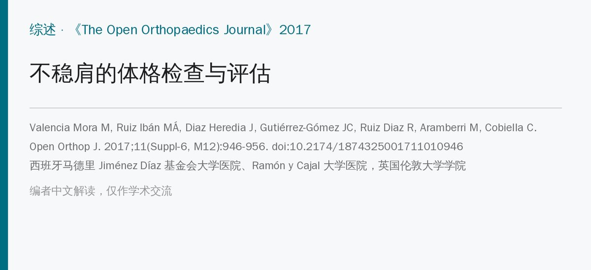
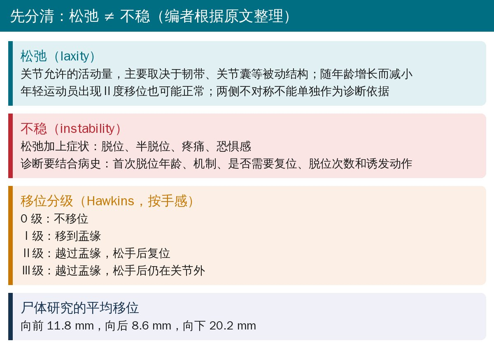
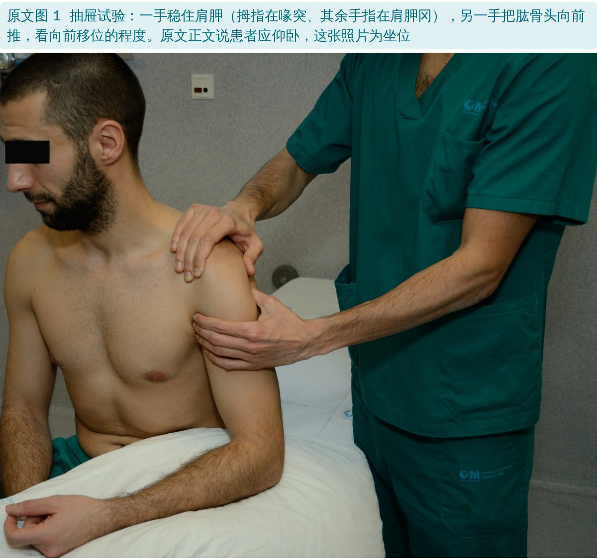
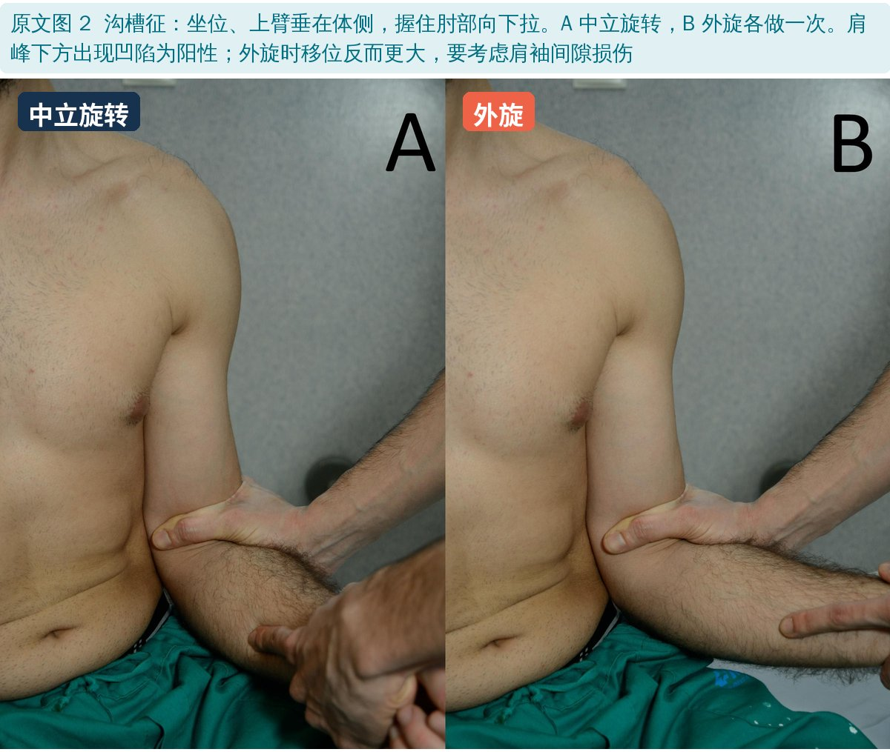
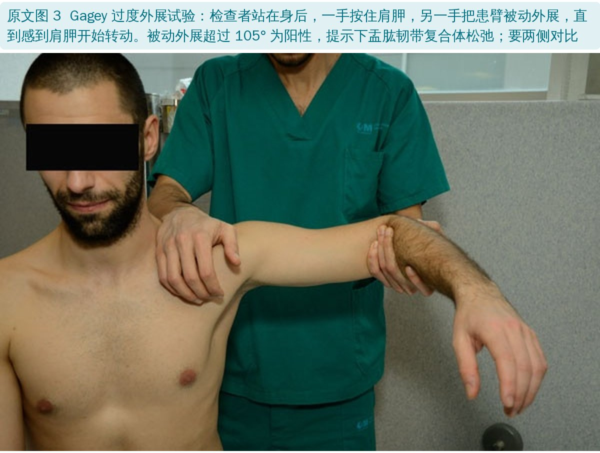
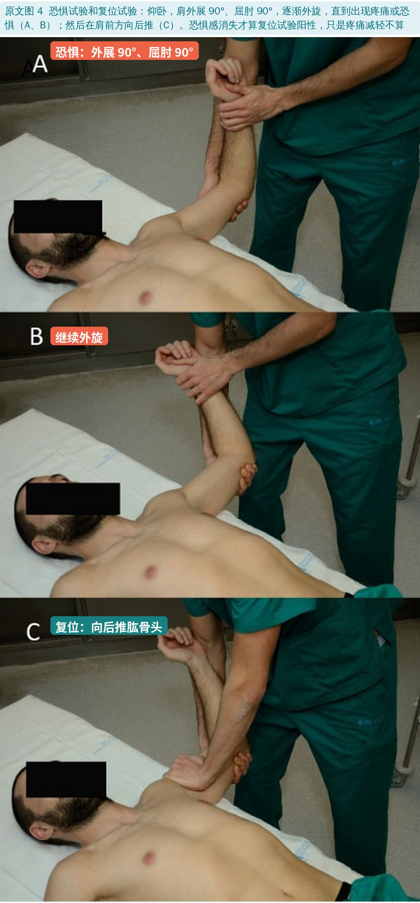
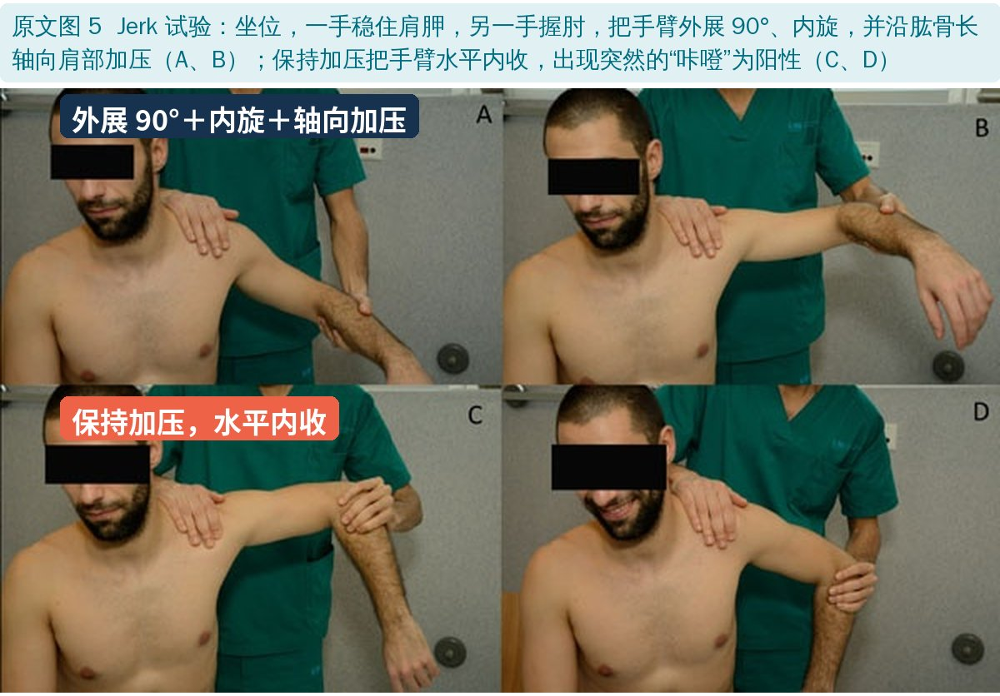
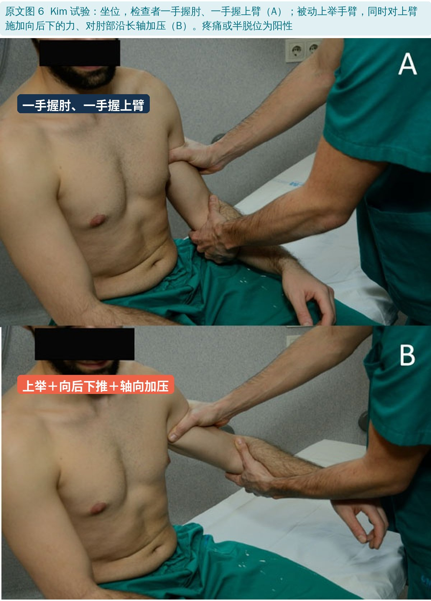
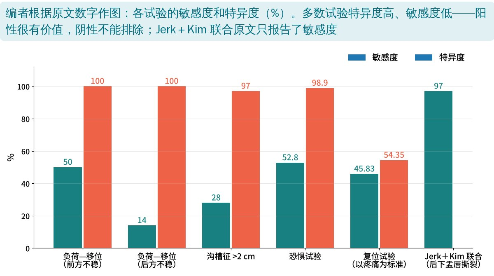
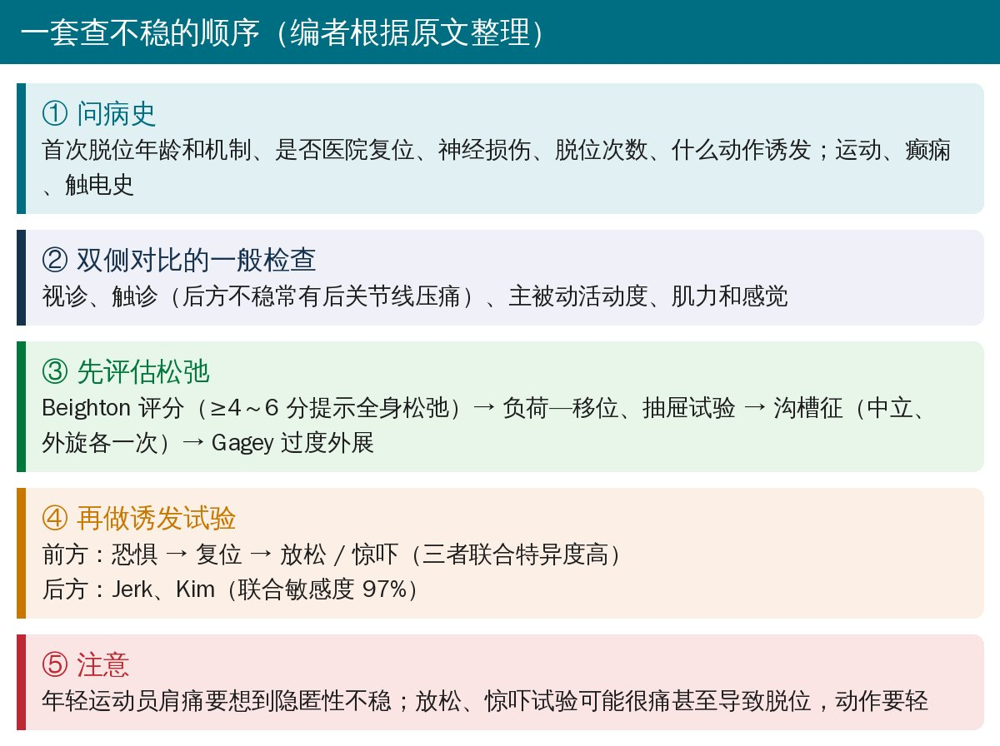

🔖原文信息（编者中文重排）
📚 文献信息
▪ Valencia Mora M, Ruiz Ibán MÁ, Diaz Heredia J, Gutiérrez-Gómez JC, Ruiz Diaz R, Aramberri M, Cobiella C. Physical Exam and Evaluation of the Unstable Shoulder. The Open Orthopaedics Journal. 2017;11(Suppl-6, M12):946-956. doi:10.2174/1874325001711010946
▪ 作者单位：西班牙马德里 Jiménez Díaz 基金会大学医院、Ramón y Cajal 大学医院，英国伦敦大学学院
▪ 文章类型：叙述性综述（介绍查肩关节不稳的各项检查及其准确性）
• 肩关节是全身最容易脱位的关节，过顶运动尤其多见；95% 以上是外伤性前脱位，一般不难认
• 难的是非外伤性、后方、多方向不稳：主要症状往往是“痛”而不是“掉出来”
• 能查出一种不稳的诱发试验，对另一种不稳可能会误导
• 年轻运动员肩痛，要想到隐匿性不稳
• 首次脱位：几岁、什么机制、在医院复位还是自己复位、有无神经损伤
• 反复不稳：脱位次数、在什么活动中发生、需要怎样复位
• 查体一定两侧对比：视诊、触诊、主被动活动度、肌力和感觉，再根据怀疑选特殊检查

🔖松弛与不稳、移位分级（编者根据原文整理）
• Beighton 评分：9 分制，小指、拇指、肘、膝过伸和弯腰手掌贴地；年轻成人以 4～6 分以上为全身松弛
• 评估肩松弛的“金标准”是麻醉下检查（消除肌肉的主动稳定作用）；正常松弛度没有统一标准
• 检查时每次用相同体位、相同力度，减少检查者之间的差异；有过脱位的人可能很难检查
坐位或仰卧，一手按肩顶稳住肩胛，一手握上臂近端；先把肱骨头压回关节盂（负荷），再向前或向后推（移位）。前方不稳敏感度 50%、后方 14%，特异度都是 100%。

🔖原文图 1：前抽屉试验
• 后抽屉：仰卧，一手握腕或前臂，另一手拇指在肱骨头前方向后推，同时把手臂前屈；在上举 45°～60° 的“零位”做更可靠
• 前抽屉：外展 80°～120°、前屈 0°～20°、外旋 0°～30°；一手稳住肩胛（拇指在喙突），另一手向前推肱骨头
• 年轻运动员Ⅱ度移位可能是正常的，两侧不对称不能单独作为诊断依据

🔖原文图 2：沟槽征，中立和外旋各做一次
• 坐位最可靠，上臂垂在体侧，握肘向下拉，肩峰下方出现凹陷为阳性；主要反映上盂肱韧带（肩袖间隙）
• 分级：Ⅰ度 <1.5 cm、Ⅱ度 1.5～2 cm、Ⅲ度 >2 cm；>2 cm 特异度 97%、敏感度只有 28%
• 外旋时移位反而更大，要考虑肩袖间隙损伤
• 无症状的人下方松弛范围也很大，没有一个绝对数值能定义下方不稳

🔖原文图 3：过度外展试验
• 被动外展 >105° 为阳性，提示下盂肱韧带复合体松弛；约 15% 的人会因恐惧而外展受限
• 现在多用“对比过度外展试验”：同时满足三点才算阳性——诱发深部疼痛、两侧相差 >20°、没有软的终末感

🔖原文图 4：恐惧试验和复位试验
• 恐惧试验：仰卧，靠床边让肩胛有支撑，外展 90°、屈肘 90°，检查者用膝顶住肘部，逐渐外旋，直到疼痛或恐惧。以恐惧为标准比以疼痛为标准一致性更好；特异度 98.9%，敏感度 52.8%
• 站立位也可以做：同时握住双侧前臂做，比单侧加压更可靠
• 复位试验：在恐惧位向后推肱骨头，看是恐惧消失（真正的不稳）还是只是疼痛减轻（可能是内撞击等隐匿性不稳）。以疼痛为标准时敏感度 45.83%、特异度 54.35%；以恐惧消失为标准，特异度可升到 100%
• 复位试验也会让肩袖病变（82%）、后方不稳（63%）、肩锁关节病变（80%）患者疼痛，一定要记下痛在哪里
• 放松试验 / 惊吓试验：在复位位稍加外旋后突然松手（惊吓试验不加外旋），疼痛或恐惧加重为阳性；可能很痛甚至导致脱位，动作要轻
• 恐惧、复位、放松三者联合，特异度很高
• 只占所有不稳的 2%～10%，没有明确外伤时容易漏诊；运动、癫痫发作、触电史要警惕
• 常和撞击、盂唇撕裂并存；后关节线常有压痛；体位性后脱位者双侧三角肌后内侧可见小皮肤凹陷
• 后方恐惧试验：屈曲、内收、内旋位向后推；但并非所有患者都在同一位置出现症状

🔖原文图 5：Jerk 试验

🔖原文图 6：Kim 试验
Jerk 试验和 Kim 试验联合，对后下盂唇撕裂的敏感度达 97%。

🔖各试验的敏感度和特异度（编者作图）

🔖查不稳的顺序（编者根据原文整理）
• 叙述性综述：没有说明检索方法和纳入标准，准确性数字来自不同研究，人群和金标准各不相同
• 后方、多方向不稳的检查数据很少，作者也承认诊断仍然困难
• 优点：动作要点、变式和注意事项写得具体，照片清楚，适合作查体参考
• 日期矛盾：收稿 2017 年 5 月 4 日，修回却是 2016 年 10 月 9 日、接收 2016 年 10 月 28 日
• 分级前后不一：第一种方法把“1～2 cm（或到盂缘）”定为Ⅱ级，第三种方法又把“到盂缘”定为Ⅰ级；沟槽征分级用 1.5 cm 为界，与 Neer 原始分级（<1 cm、1～2 cm、>2 cm）不同
• 图文不符：正文说抽屉试验要仰卧，图 1 是坐位；正文说 Jerk 试验是“屈曲、内收、内旋”，图 5 图注写的是“外展 90° 后水平内收”，并写成“患者握住肘部”
• Kim 试验：正文写“被动前屈 45°”，图注写“被动上举”，两处描述不一致
• 沟槽征：说“两个体位的下方移位应相同”，但正常情况下外旋时移位应减小
• 笔误：“hiperlaxity”“provoke and anterior translation”“Von Raebox”（应为 Von Raebrox）
• 先分清松弛和不稳：查到松，不等于有病；要有症状、和病史对得上
• 怀疑前方不稳：恐惧 → 复位 → 放松依次做，以“恐惧”而不是“疼痛”为判断标准
• 怀疑后方不稳：Jerk＋Kim 联合，敏感度高；注意癫痫、触电史
• 沟槽征中立、外旋各做一次，外旋时更松提示肩袖间隙问题
• 所有检查两侧对比；对刚脱位或很恐惧的患者，诱发试验要轻，必要时延后
欢迎关注骨科康复小黄公众号，获取更多物理治疗的专业知识！
📄参考文献：
Valencia Mora M, Ruiz Ibán MÁ, Diaz Heredia J, Gutiérrez-Gómez JC, Ruiz Diaz R, Aramberri M, Cobiella C. Physical Exam and Evaluation of the Unstable Shoulder. Open Orthop J. 2017;11(Suppl-6, M12):946-956. doi:10.2174/1874325001711010946
原文以 CC BY 4.0 协议开放获取，版权归原作者所有。本文为学术交流中文解读：原文图 1～6 引自原文，图中中文标签为编者所加；准确性图由编者根据原文数字绘制，要点卡为编者整理。仅供学习交流，如有侵权请联系删除。